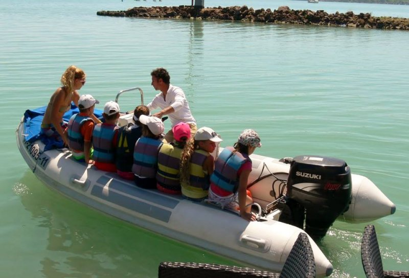

Immár 22 éve teli csoportokkal, vidám hangulatban tartjuk vitorlás táborainkat Tihanyban. Ha érdekel a vitorlázás és meg szeretnél ismerkedni ennek a szép sportnak az alapjaival, vagy már voltál nálunk és magával ragadott a vízen suhanás, akkor várunk valamelyik táborunkba!
A biztonság és a jó hangulat az elsődleges nálunk, ezért töretlen figyelemmel és lelkesedéssel, nagyon jó edzőkkel és tanárokkal, vidám, változatos programokkal igyekszünk megszolgálni az eddigi bizalmatokat!
Minden táborunkban a csoportok 18 fősek, egy vitorlás edző és két tanár felügyel a gyerekeket a tábor egész ideje alatt. Optimist, Pille és Topper vitorlásokban tanítunk mérettől és kortól függően. Az edző gumimotorosban követi és irányítja a hajókat a vízen. A résztvevők lehetőség szerint napi 4-6 órát töltenek vízen, emellett a program sportjátékokkal, kirándulással és egyéb szabadidős tevékenységgel egészül ki. A szállás a kikötő melletti igényes klubházban van, ahol kis focipálya, ping-pong asztal, sok egyéb játék és nagy társalgó várja a gyerekeket. Elhelyezés 6-8 ágyas szobákban. Étkezések a klubházban történnek napi háromszor, emellett gyümölcscsel, csokival és kisebb uzsonnával is számolhattok minden nap, igény és éhség szerint. Mentőmellényt biztosítunk és kötelező. A részvétel feltétele a biztos úszni tudás!
